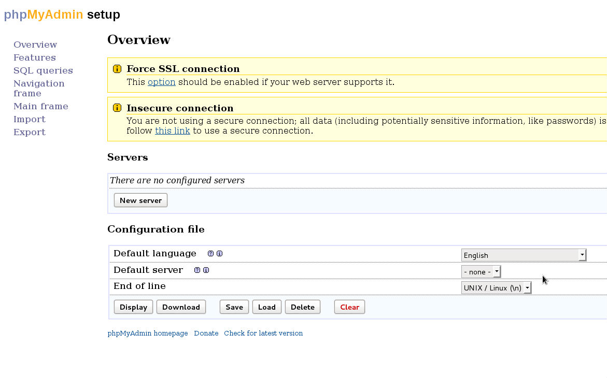
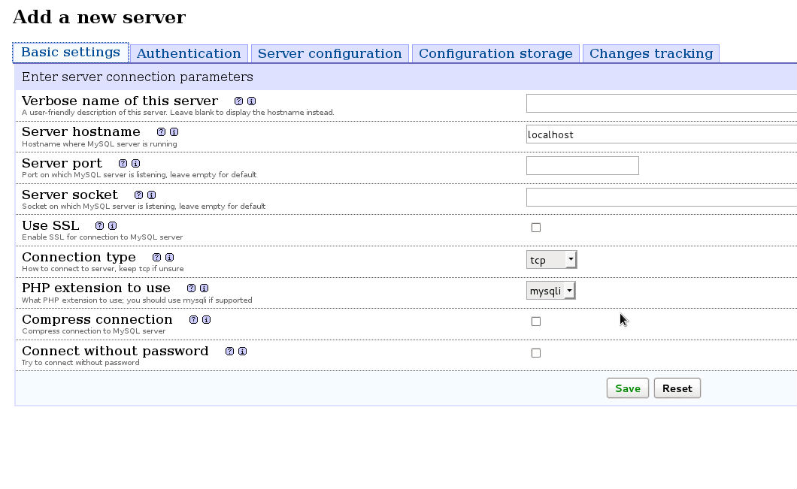
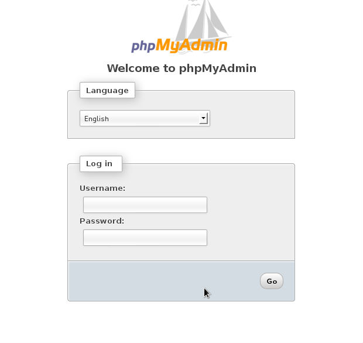

Si vous avez MySQL sur votre serveur, il est souvent beaucoup plus simple de manipuler des bases et des utilisateurs MySQL avec phpMyAdmin. Si vous ne connaissez pas, il s'agit d'un utilitaire web écrit en php qui permet de gérer son MySQL. Vous pouvez affichez rapidement des tables, créer des tables, des bases et des utilisateurs, optimiser des tables, exécuter du code SQL, etc. Vous pouvez l’utiliser pour une instance de MySQL locale mais également pour une instance sur d'autres serveurs. Et je reviens sur cette article un peu plus de 3 ans plus tard pour vous dire qu'il existe beaucoup mieux que ça. Il existe MySQL Workbench que vous pouvez utiliser via un tunnel SSH si vous n'avez pas les droits pour vous connecter à distance car il s'agit d'un client lourd à installer sur votre poste. C'est tout simplement mille fois mieux et en plus vous n'aurez plus à mettre à jour ce putain de phpMyAdmin qui est bourré de failles en tous genre et qui fait la joie des script kiddies qui trainent sur internet. Bref, je vous aurais prévenu. Si vous pouvez utiliser un client lourd, foncez sur MySQL Workbench !
Nous allons donc voir comment l'installer sur Linux.
Pour commencer il faut s'assurer que vous ayez PHP 5 minimum :
# php -v
PHP 5.3.3-7+squeeze13 with Suhosin-Patch (cli) (built: Jun 10 2012 07:31:32)
Copyright (c) 1997-2009 The PHP Group
Zend Engine v2.3.0, Copyright (c) 1998-2010 Zend Technologies
with Suhosin v0.9.32.1, Copyright (c) 2007-2010, by SektionEins GmbH
Vous devez également vous assurer d'avoir MySQL 5 ou supérieur :
# mysql -V
mysql Ver 14.14 Distrib 5.1.63, for debian-linux-gnu (x86_64) using readline 6.1
Vous devez aussi vous assurez que apache tourne :
# /etc/init.d/apache2 status
Apache2 is running (pid 1618).
Ensuite, il faut checker les modules de PHP. Il vous faut obligatoirement ces 4 modules :
- GZip
- Bzip2
- ZIP compression et décompression
Pour tester cela, le plus simple est de faire un fichier phpinfo.php contenant ceci :
<?php phpinfo(); ?>
Et de le mettre sur votre serveur et de l'apeller dans votre navigateur. Vous pourrez alors vérifier si vous avez ces modules. Si il vous en manque, vous pouvez utiliser votre gestionnaire de paquet pour installer les modules manquants.
Si vous avez compiler PHP à partir des sources il vous faut au minimum ceci lors de votre ./configure :
./configure --with-apxs2=/usr/local/apache2/bin/apxs --with-mysql --with-bz2 --with-zlib --enable-zip --enable-mbstring --with-mcrypt
Ensuite, on va télécharger phpMyAdmin dans le dossier par défat d'apache. Ce dossier est différent selon les distributions et la façon de le trouver est également différente selon les distributions...
En gros, le dossier pas défaut est souvent /var/www/ mais cela peut ne pas être le cas pour vous. Si vous êtes sur un redhat ou dérivé vous pouvez utilisez cette commande :
# grep DocumentRoot /etc/httpd/conf/httpd.conf
DocumentRoot /var/www/
Si vous êtes sur un debian ou dérivé vous pouvez utilisé cette commande :
# grep DocumentRoot /etc/apache2/sites-available/default
DocumentRoot /var/www/
Pour la suite de ce tutoriel, on va utiliser /var/www comme DocumentRoot par défaut. Au moment ou j'écris ces lignes, la dernière version de phpMyAdmin est la 3.5.2.1. Nous allons donc la télécharger, la dezziper et la mettre dans /var/www :
# cd /var/wwwFaites un wget sur la dernière version de phpMyAdmin disponible sur le site : http://www.phpmyadmin.net/home_page/downloads.php
# tar xvfz phpMyAdmin-3.5.2.1-all-languages.tar.gz# mv phpMyAdmin-3.5.2.1-all-languages phpmyadminEnsuite on va créer un utilisateur pour phpMyAdmin afin de sécuriser l'installation :
# adduser phpmyadmin# passwd phpmyadminIl faut ensuite donnez les permissions nécéssaires au dossier /var/www/phpmyadmin. Pour cela, il faut savoir avec quel utilisateur apache tourne. Encore une fois, cela est très différent selon les ditrubutions, cela peut-être www-data, daemon, apache.
Le plus simple pour le savoir est de faire comme ceci :
# ps aux | egrep "apache|http"Cela devrait vous renvoyez des lignes telles que celles-ci :
www-data 28664 0.0 0.0 155012 7228 ? S Aug05 0:00 /usr/sbin/apache2 -k start
www-data 28665 0.0 0.0 156056 7204 ? S Aug05 0:03 /usr/sbin/apache2 -k start
www-data 28666 0.0 0.1 452764 17232 ? Sl Aug05 0:35 /usr/sbin/apache2 -k start
www-data 28692 0.0 0.1 451992 16560 ? Sl Aug05 0:36 /usr/sbin/apache2 -k start
Dans ce cas là, on voit qu'apache tourne avec l'utilisateur www-data. On peut donc donner les bons droits à notre dossier :
# cd /var/www/# chown -R phpmyadmin:www-data phpmyadmin/Nous allons ensuite créer le fichier de configuration à partir de l'installeur fourni par phpMyAdmin. Pour cela il faut copier le fichier de configuration exemple et lui attribuer les bons droits :
# cd /var/www/phpmyadmin/# mkdir config# chmod o+rw config# cp config.sample.inc.php config/config.inc.php# chmod o+w config/config.inc.phpVous devez ensuite lancer l'installeur via votre navigateur avec l'url suivante :
http://votre-adresse-ip/phpmyadmin/setup/index.phpSi tout c'est bien passé vous devriez obtenir ce wizard :

Vous devez ensuite cliquer sur le bouton New Server et vous allez devoir remplir les champs suivants pour que l'installateur continue :

Vous devez donc remplir au minimum :
- Verbose Name of the Server : Donnez un nom decriptif au serveur MySQL
- Password for Config Auth : Le mot de passe root MySQL
- Authentication Type : Utiliser le cookie qui est très bien
Cliquer sur le bouton save et voilà c'est fini !
Il ne vous reste plus qu'à revenir sur l'url ou se trouve phpMyAdmin :
http://votre-adresse-ip/phpmyadmin/Et vous devriez obtenir ceci :

Il ne vous reste plus qu'a entrer vos identifiants (utilisateur root et mot de passe root MySQL) et profiter de votre installation toute neuve de phpMyAdmin.